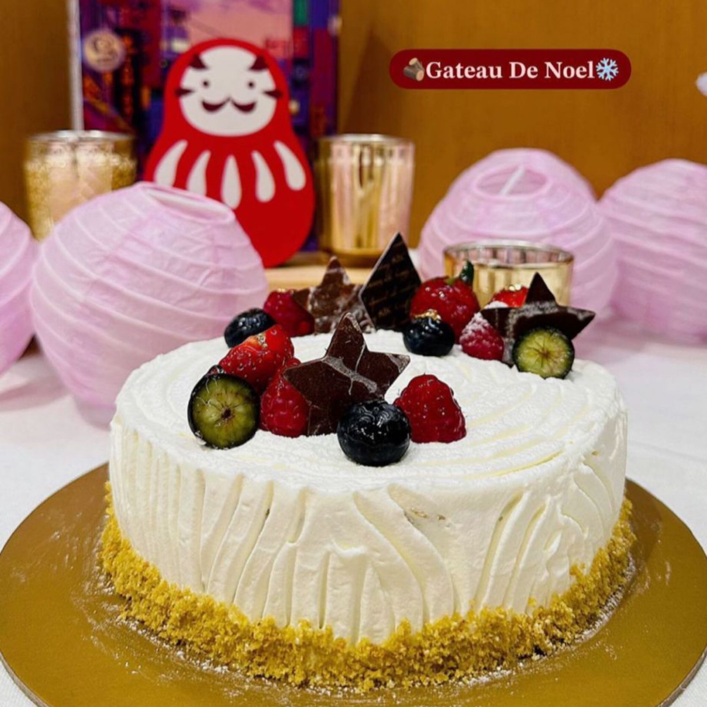
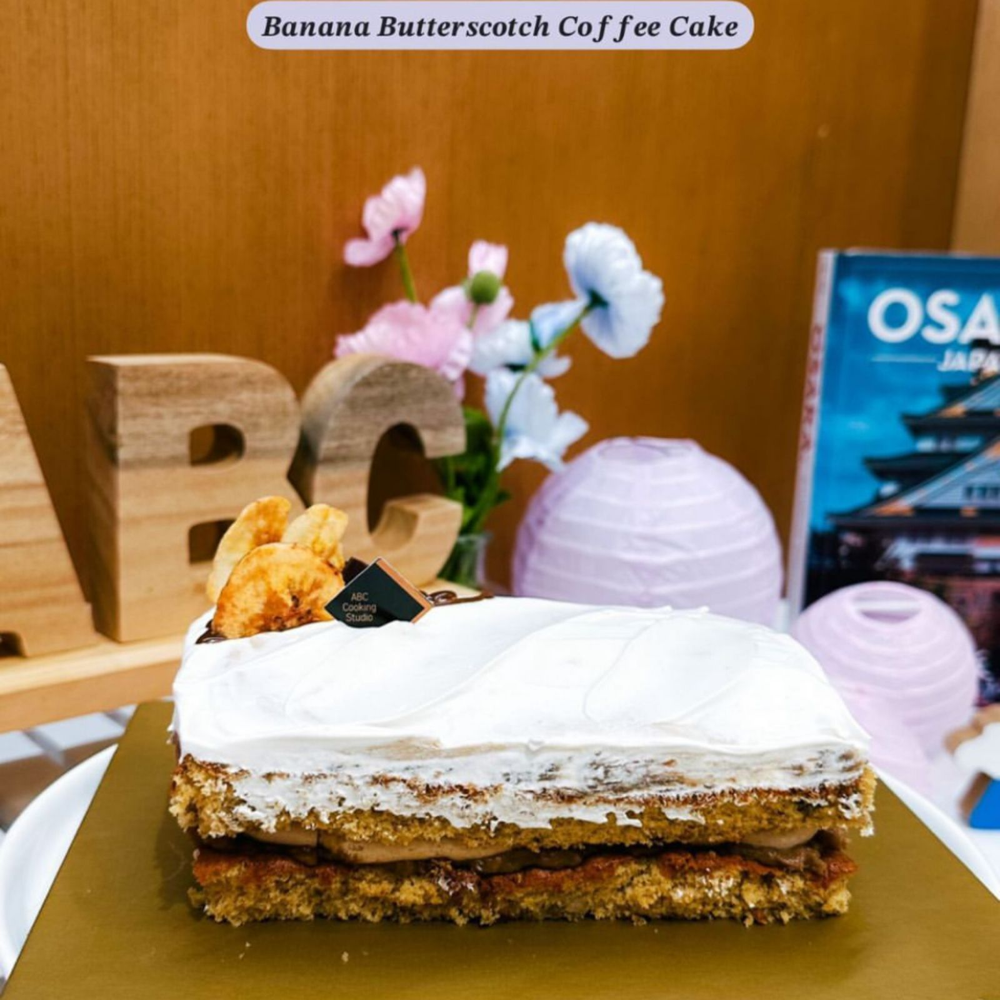
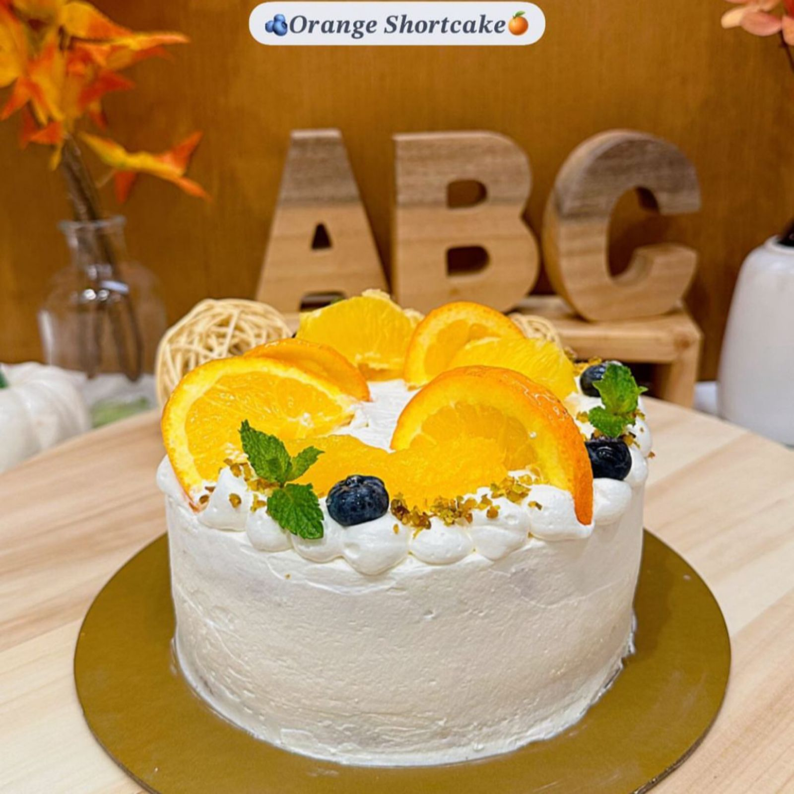
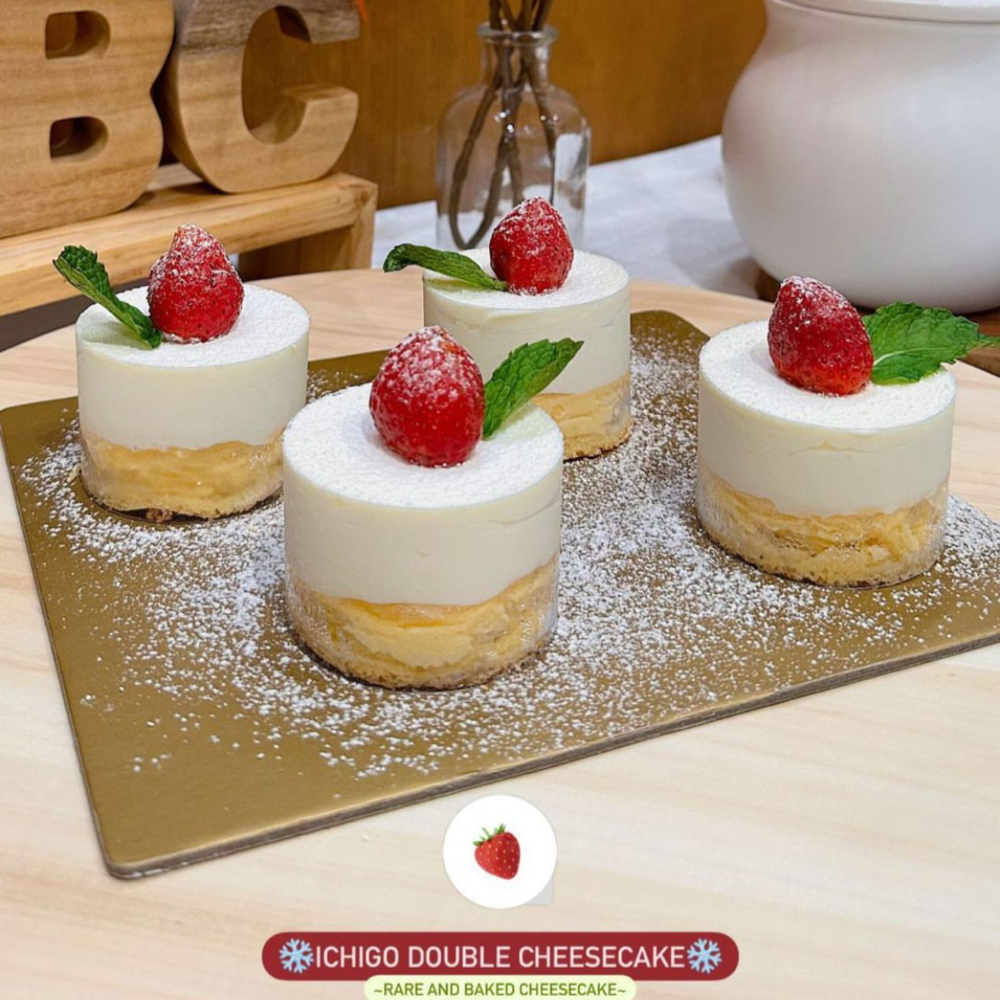
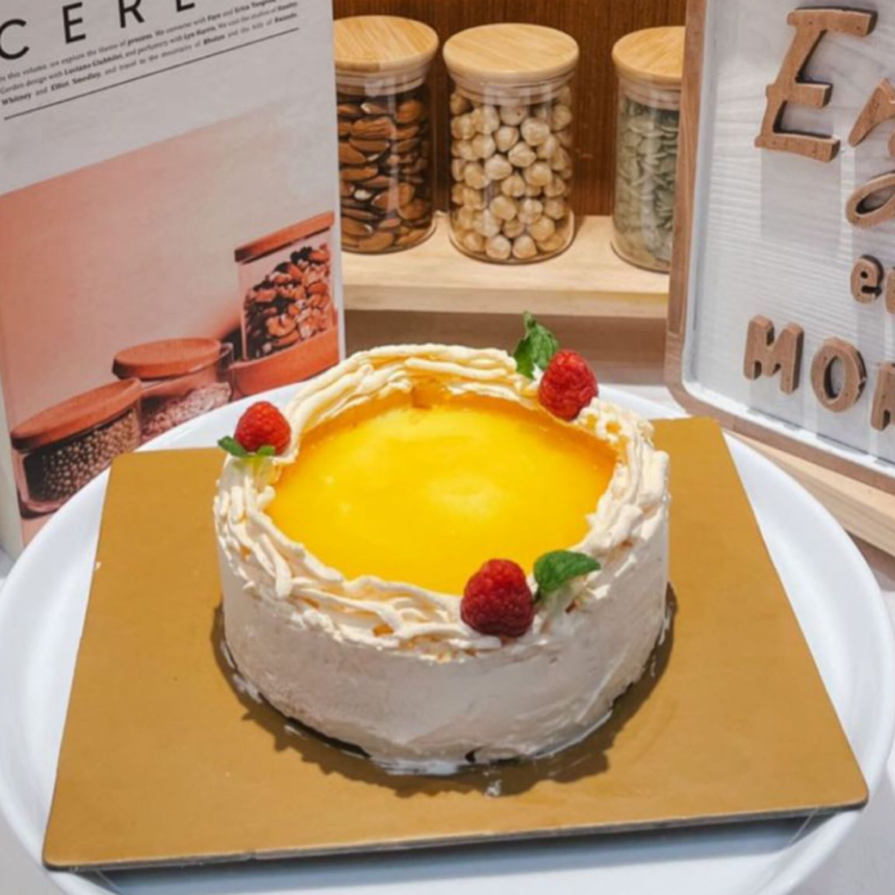
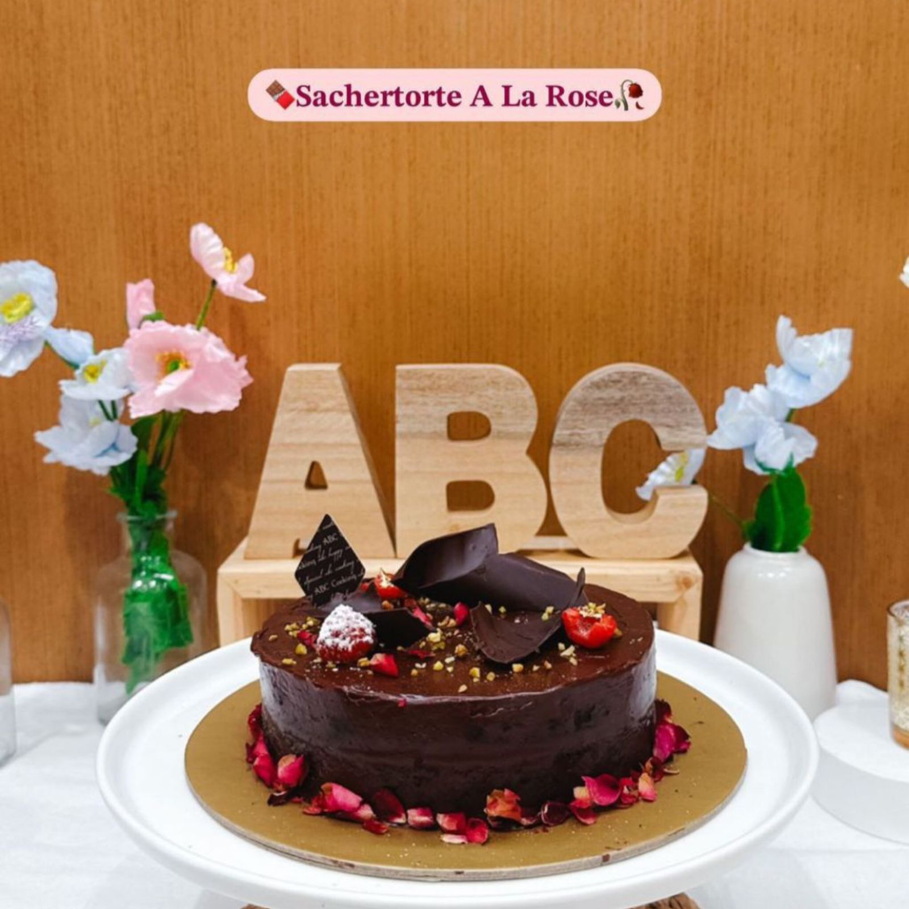
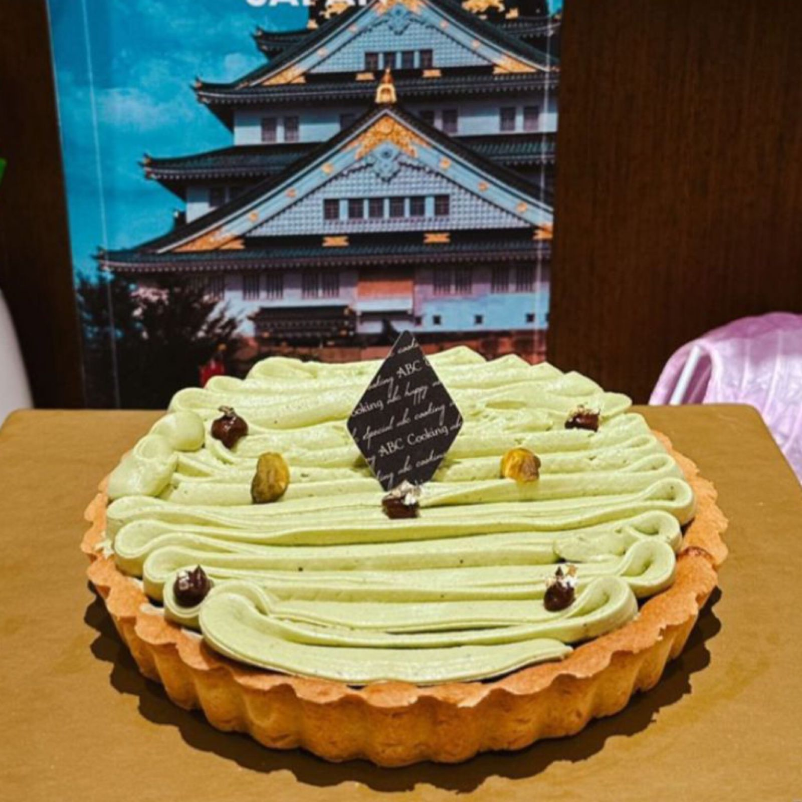
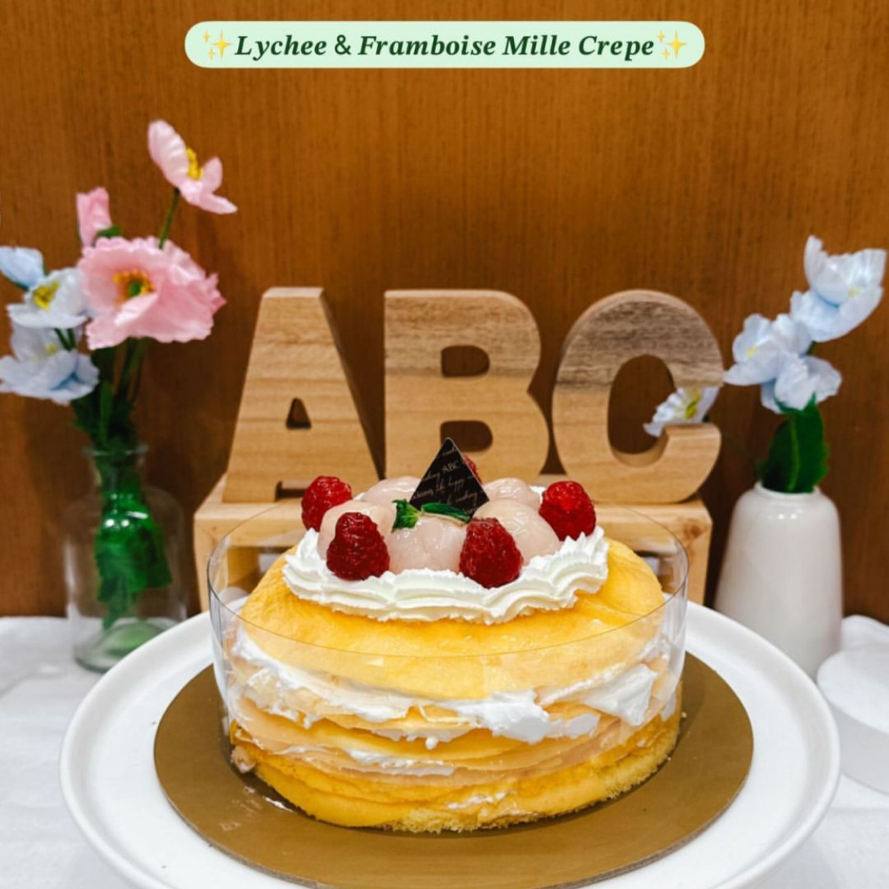

Gateau De Noel
Kue yang disajikan khusus pada perayaan Natal, Vnilla Whole Cake yang manis dan berisi filling crumble cookies didalamnya yang dihias seperti de noel atau garis batang kayu special for christmas
Banana Butterscotch Coffe cake
Banana Butterscotch Cake is a classic tea time cake made with ripe bananas and Butterscotch chips that can be served as an evening snack along with Espresso Coffee or Masala Chai. Try this delicious cake and enjoy!
Orange Shortcake
Our Orange Raspberry & Chocolate Shortcake consists of vanilla genoise covered with fresh chantilly cream and topped with fresh orange slices.
The vanilla genoise sponge has a light and moist texture.
Ichigo Double Cheseecake
combination between cheesecake and berries can be so irresistable for anyone who take a bite of it!
Summer Orange Berry Cake
Summer Orange Berry Cake adalah pencuci mulut yang menyegarkan dengan rasa dan aroma buah jeruk dan peach yang lezat. Kue ini memiliki tekstur lembut dan ringan, dengan lapisan cake yang dipenuhi dengan potongan-potongan segar buah jeruk dan peach yang memberikan sentuhan manis dan asam yang menyegarkan
Sachertorte A La Rose
The classic Sachertorte is a chocolate cake, denser than your usual sponge cake, with one or more layers of jam (usually apricot) and covered with chocolate glazing.
The result can be described quite simply as delicious, though some feel the layer of icing overdoes the sweetness
Pistachio Chocolate Tart
This decadent tart starts with a crust of pistachios and graham crackers, which gives a great color, flavor and texture to the dessert.
Lychee Framboise Mille Crepe
Refreshing Mille Crêpe layered with lychee cream and framboise lychee sauce